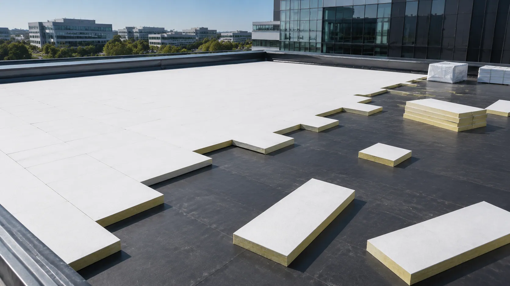
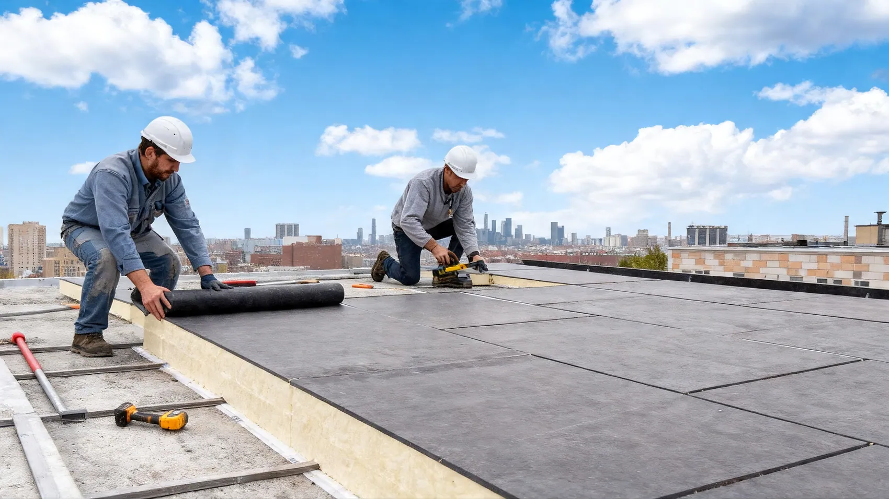
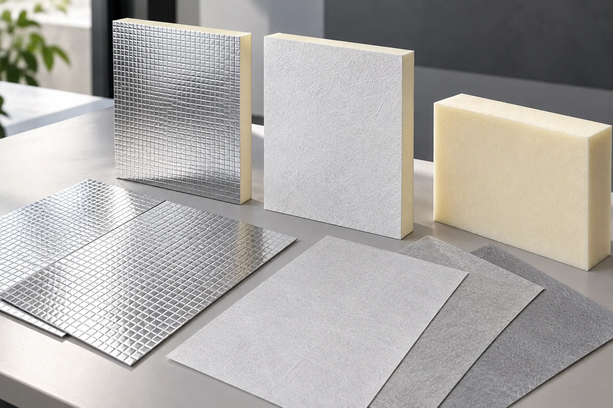
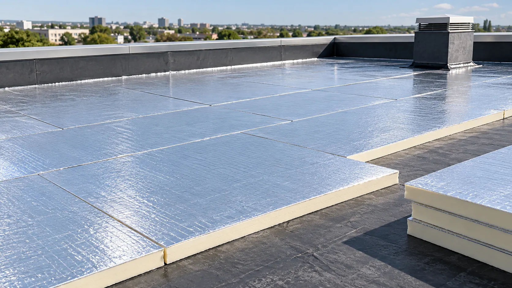

PIR / PUR Insulation Boards
Foam bonding reliability, surface stability, and consistent facer performance for rigid insulation board manufacturing.
01. Hero Section
PIR / PUR & Pipe Insulation Facers Solution Hub
Improve foam bonding, moisture barrier performance, dimensional stability, and production consistency with application-matched fiberglass coated veil and aluminum foil composite facer solutions.
GRECHO helps insulation manufacturers address facer-related challenges, from delamination and foil damage to surface defects and processing efficiency.
Key Advantages:

02. Application Context
PIR/PUR insulation boards and pipe insulation systems require facer materials that support reliable bonding, stable processing, and long-term insulation performance.
From continuous foam board production to pipe insulation lamination, the right fiberglass or aluminum foil composite facer helps manufacturers balance barrier requirements, mechanical strength, and production compatibility.

Foam bonding reliability, surface stability, and consistent facer performance for rigid insulation board manufacturing.
Moisture protection, dimensional stability, and suitable surface properties for building envelope insulation systems.
Aluminum foil composite facers for insulation systems requiring vapor barrier performance, surface durability, and reliable lamination.
Flexible foil and fiberglass composite facing solutions for insulation systems involving curved surfaces, wrapping, and demanding installation conditions.

03. Pain Point Diagnostic
Even when the foam or insulation core meets performance requirements, unsuitable facer materials can cause bonding defects, barrier failures, and production inefficiencies.
Incompatible facer surfaces, insufficient surface activation, or unsuitable coating structures may lead to poor adhesion between the PIR/PUR foam and facing material, causing blistering, hollow areas, or delamination.
Thin aluminum foil without sufficient substrate support may develop pinholes, microcracks, or local tearing during lamination, bending, or handling, potentially reducing barrier integrity.
Inadequate foil integrity, damaged composite layers, or unsuitable facer structures can compromise moisture and vapor resistance, affecting the long-term performance of insulation systems.
Uneven tension, inconsistent roll properties, or insufficient mechanical stability may cause facer wrinkling, misalignment, tearing, and increased material waste during continuous production.
04. Facer Direction
GRECHO provides application-matched fiberglass coated veil and aluminum foil composite facer directions designed to address bonding reliability, barrier integrity, and processing stability.
Each direction is reviewed according to the insulation core, production method, barrier requirements, and intended application.

Challenge: Weak Foam Adhesion & Facer Delamination
In PIR/PUR production, unsuitable coating properties or inadequate foam-to-facer interaction can result in unstable bonding, localized separation, and inconsistent finished board quality.
GRECHO Solution
An application-matched fiberglass coated veil with controlled surface properties and coating structure can support more consistent interaction with the PIR/PUR foam system.
The coating formulation and fiberglass substrate can be reviewed to improve foam wetting, bonding compatibility, and processing reliability.
Review Focus: Foam adhesion, coating compatibility, surface characteristics, air permeability, and production conditions.
Challenge: Foil Pinholes, Microcracks & Mechanical Damage
Unsupported or insufficiently reinforced aluminum foil may be vulnerable to localized stress during lamination, winding, cutting, and installation.
These defects can damage the foil layer and compromise the intended barrier performance.
GRECHO Solution
Aluminum foil laminated with fiberglass veil, fiberglass mesh, or fiberglass fabric provides additional mechanical support to the foil structure.
A suitable composite design can help distribute localized stress, reduce handling-related damage, and improve dimensional stability while retaining the barrier properties of an intact aluminum foil layer.
Review Focus: Foil thickness, fiberglass reinforcement, laminate adhesion, pinhole resistance, tensile strength, and flexibility.
Challenge: Moisture Penetration & Barrier Inconsistency
Insulation systems exposed to humid environments, temperature differences, or condensation risks require dependable vapor barrier performance.
Damaged foil layers, weak laminate interfaces, or unsuitable facer selection can reduce moisture protection.
GRECHO Solution
Aluminum foil and foil-fiberglass composite facers provide material options for applications requiring low water vapor transmission and stable surface protection.
GRECHO helps manufacturers review foil structure, reinforcement type, laminate integrity, and processing requirements to identify suitable barrier-facing solutions.
Review Focus: Water vapor transmission, foil continuity, composite layer bonding, moisture exposure, and application compatibility.
05. Material Direction Review
Different PIR/PUR and pipe insulation systems require different combinations of bonding compatibility, vapor barrier performance, mechanical reinforcement, and flexibility.
GRECHO helps manufacturers evaluate suitable fiberglass and aluminum foil facer directions according to production requirements and finished insulation system specifications.

For PIR/PUR insulation boards requiring controlled surface properties, reliable foam bonding, dimensional stability, and consistent processing performance.
For insulation systems requiring a reflective surface and low water vapor transmission through an intact foil layer.
For insulation systems requiring additional mechanical reinforcement, improved handling strength, and support against localized foil damage.
For PIR/PUR boards and selected pipe insulation applications requiring a combination of foil barrier properties, fiberglass substrate stability, and application-matched lamination compatibility.
06. Performance Review Factors
GRECHO helps production engineers, technical buyers, R&D teams, and quality managers assess facer properties that influence insulation manufacturing efficiency and finished product reliability.
Evaluate facer surface properties, coating structure, adhesive compatibility, and foam-to-facer adhesion under actual production conditions.
Review water vapor transmission, foil integrity, composite structure, and moisture exposure requirements according to the intended insulation application.
Assess foil pinhole resistance, tensile strength, tear resistance, and reinforcement effectiveness during processing and handling.
Review available fire-related documentation for the selected facing material and applicable fire performance requirements of the complete insulation system.
Evaluate facer flatness, wrinkling resistance, flexibility, and mechanical stability during lamination, cutting, winding, and installation.
Confirm roll dimensions, material thickness, coating uniformity, winding quality, and compatibility with continuous board or pipe insulation manufacturing processes.
07. Documentation Support
GRECHO coordinates technical documentation and material samples to help manufacturers evaluate fiberglass coated veil and aluminum foil composite facers before production qualification.
Document access is matched to the selected material, application requirements, and buyer review stage.

Public Resource · PRODUCT BRIEF
An introduction to fiberglass coated veil, aluminum foil, and foil-fiberglass composite facer options for PIR/PUR boards and pipe insulation systems.
Application: PIR / PUR Boards / HVAC / Pipe Insulation
Form Submission · BASIC TDS
Basic specifications including nominal weight, thickness, roll width, material structure, and available physical properties.
Access: Form Submission
Review Required · FIRE TEST
Available fire-related documentation for selected fiberglass and aluminum foil composite facer configurations under applicable testing standards.
Review: Product and Configuration Dependent
Review Required · FULL TDS
Detailed technical specifications covering selected material properties, mechanical performance, barrier characteristics, and relevant test conditions.
Scope: Selected Fiberglass or Aluminum Foil Composite Facer
Review Required · SDS / MSDS
Available safety and handling information for the selected fiberglass coated veil or aluminum foil composite facer product.
Type: Safety Documentation
Internal Review · COMPLIANCE
Review of available compliance documentation based on the selected material, target market, and intended insulation system application.
Access: Internal Technical Review
Access Clarification
Document availability depends on the selected material, laminate configuration, testing scope, and application requirements. Fire classifications, vapor barrier performance, and other properties of individual facer materials do not automatically represent the performance of the complete insulation system.
Weak foam bonding, foil pinholes, moisture barrier failures, or processing defects can affect both production efficiency and finished insulation quality.
GRECHO helps manufacturers review these challenges and identify suitable fiberglass coated veil or aluminum foil composite facer directions.
Share your insulation core type, production method, current facer structure, and key technical concerns to begin a focused material evaluation.
09. FAQ Preview
Fiberglass coated veil can be designed with application-matched surface properties and coating structures to support interaction with PIR/PUR foam.
Suitable facer characteristics may help improve foam wetting and bonding consistency during production.
However, final adhesion also depends on foam formulation, processing temperature, curing conditions, and production line parameters. Bonding performance should be validated through actual manufacturing trials.
Fiberglass veil, mesh, or fabric can provide mechanical support beneath aluminum foil and help distribute localized stress during lamination, handling, and installation.
A properly designed composite structure may reduce the risk of tearing and handling-related foil damage.
The result depends on foil thickness, reinforcement construction, laminate adhesion, and processing conditions.
Fiberglass coated veil is often reviewed for applications prioritizing foam bonding, dimensional stability, and surface processing compatibility.
Aluminum foil and foil-fiberglass composite facers are typically considered where vapor barrier performance, reflective surface properties, or mechanical reinforcement are important.
For pipe insulation, flexibility, bending behavior, and installation requirements should also be evaluated.
The most suitable facer depends on the insulation core, production method, and finished system requirements.
Please share your insulation type, board or pipe dimensions, production method, required facer structure, and key performance requirements.
For PIR/PUR boards, information about the foam formulation and existing bonding issues is helpful.
For pipe insulation, details such as pipe diameter, operating environment, wrapping method, and vapor barrier requirements will support a more relevant material recommendation.
10. Final CTA
From foam bonding compatibility and foil reinforcement to moisture barrier performance and production stability, GRECHO helps PIR/PUR board and pipe insulation manufacturers identify facer solutions matched to their manufacturing requirements.
Whether you are developing a new insulation product or improving an existing production process, our team can assist with material selection, technical documentation, and sample coordination.